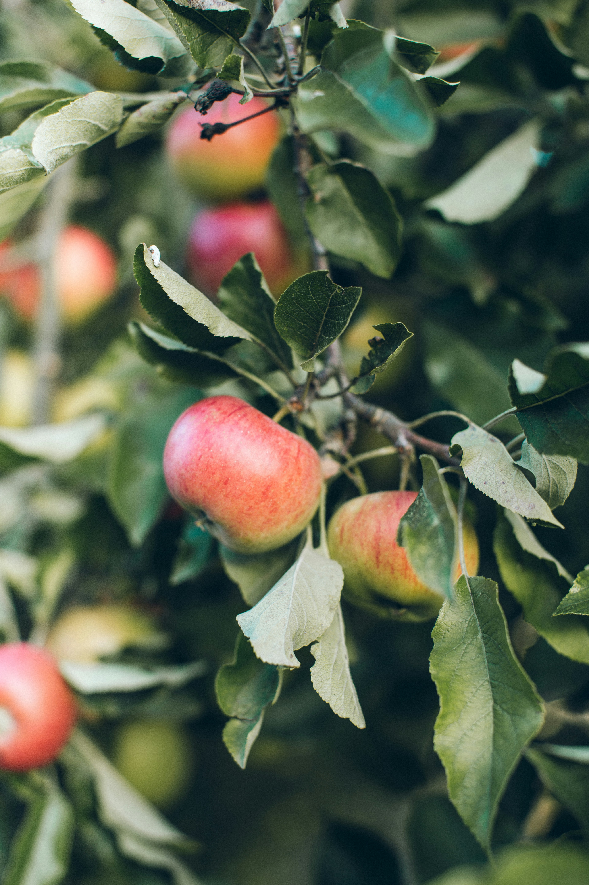

Wissenswertes
Hier finden Sie hilfreiche Informationen zu Obst, Gemüse, Kräutern und anderen Gartenpflanzen.

🍎 Apfelbaum
Sonne/Halbschatten · Ernte im Herbst
Erdbeeren
Sonniger Standort
Tomaten
Viel Sonne
Gurken
Warm und feucht
Kartoffeln
Sonniger Standort
Lavendel
Sonnig und trocken